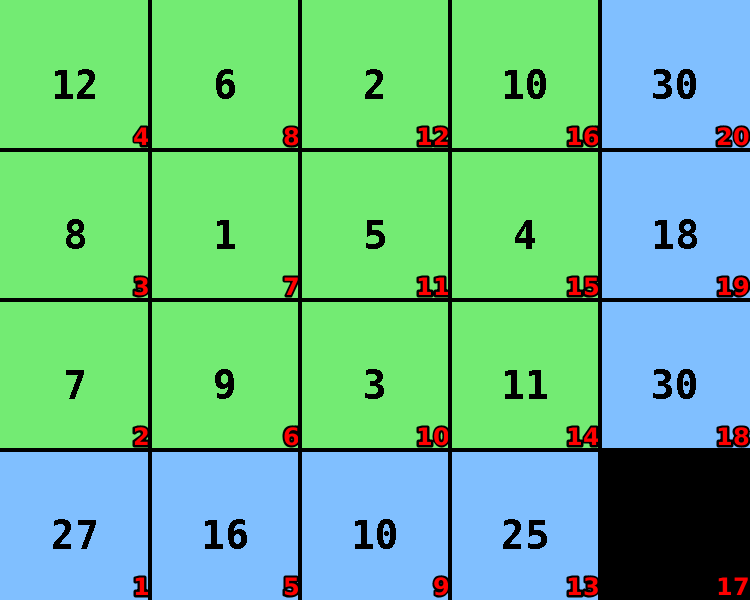

Survo
Language: Teaching Script Entire Dialog
World states:
init-survo2.world
final-survo.world
fail-survo.world
Primitive concepts used
Object types:
|
locations, blocks |
Colors:
|
red, blue
|
| Spatial relations: |
on, below, between |
| Functions: |
count of, less than |
Teaching Dialog (Rosie in bold)
TEACHER: The name of the puzzle is survo.
Please setup the puzzle.
TEACHER: Load init-survo2.

Ok.
TEACHER: Ok.
Please describe the actions, goals, and failure conditions.
TEACHER: You can write a number that is between one and twelve onto an empty location.
Please describe the meaning of 'empty' in this context.
TEACHER: If the value of a location is absent then the location is empty.
Ok, I've learned the meaning of 'empty' for this context.
I've learned the action.
TEACHER: The solution has four steps.
Ok.
TEACHER: Load final-survo.

Ok.
TEACHER: The name of the goal is all-filled.
Please setup the goal state.
TEACHER: Ok.
Please describe the goal.
TEACHER: The goal is that all locations are filled.
Please describe the meaning of 'filled' in this context.
TEACHER: If the value of a location is more than zero then the location is filled.
Ok, I've learned the meaning of 'filled' for this context.
I've learned the goal.
TEACHER: Load fail-survo.
Ok.
TEACHER: If the value of a green location is the value of another green location then you lose.
Please setup the failure condition.
TEACHER: Ok.
I've learned the failure condition.
TEACHER: The name of a failure is file-sum.
Please setup the failure condition.
TEACHER: Ok.
Please describe the failure condition.
TEACHER: If the green locations in a file are filled and the sum of the values of the file is not the value of a location that is beneath the file then you lose.
Please describe the meaning of 'file' in this context.
TEACHER: If the blocks have the same column then they are in a file.
Ok, I've learned the meaning of 'file' for this context.
Please describe the meaning of 'beneath' in this context.
TEACHER: If a block is blue and the column of the block is the column of a location then the block is beneath the location.
Ok, I've learned the meaning of 'beneath' for this context.
I've learned the failure condition.
TEACHER: The name of a failure is rank-sum.
Please setup the failure condition.
TEACHER: Ok.
Please describe the failure condition.
TEACHER: If the green locations in a rank are filled and the sum of the values of the rank is not the value of a location that is beside the rank then you lose.
Please describe the meaning of 'rank' in this context.
TEACHER: If the blocks have the same row then they are in a rank.
Ok, I've learned the meaning of 'rank' for this context.
Please describe the meaning of 'beside' in this context.
TEACHER: If a block is blue and the row of the block is the row of a location then the block is beside the location.
Ok, I've learned the meaning of 'beside' for this context.
I've learned the failure condition.
TEACHER: Done.
I've learned survo. Should I try to solve the puzzle?
TEACHER: No.
Ok.